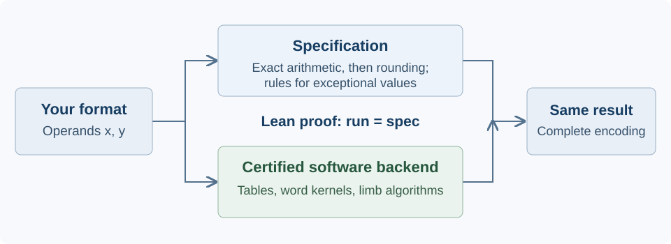
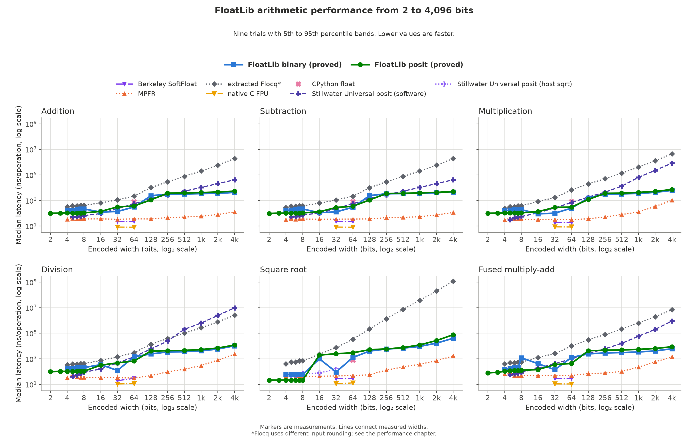

Overview
FloatLib is a verified arbitrary-precision floating-point arithmetic library in Lean. It supports IEEE binary and decimal, arbitrary-width posits, P3109, small ML formats, and user-defined formats and rounding rules. Each certified software backend is proved equal to its encoded specification, including signed zeros and exceptional values. We built FloatLib to support verified machine learning and numerical software with efficient arithmetic.

Key contributions
- Custom formats and rounding rules. Choose exponent and fraction widths, bias, and encoding policies, or define a new representation. IEEE binary and decimal, small ML formats, arbitrary-width posits, and P3109 share interfaces for arithmetic and mixed-format operations.
- Numerical proofs connected to code. Correct rounding, half-ulp error bounds, and Sterbenz's lemma describe the arithmetic a program executes. Posits also have exact quire accumulation within capacity and real-rounding proofs for roots, powers, exponentials, and logarithms.
- Signed zeros, NaNs, infinities, and exception flags. The IEEE model makes their encodings and behavior explicit. Proofs about complete result words preserve distinctions that equality over the reals cannot express.
- Fast certified execution. The planner chooses among lookup tables, machine-word kernels, and limb algorithms. Every certified choice proves agreement with the same specification; Lean erases proof terms during compilation.
Performance
We benchmarked six arithmetic operations from 2 to 4,096 bits. The guide gives all timings and the separate P3109 comparison.
{kind=link}
